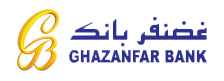

About
"Welcome to Rushd Foundation, a dynamic initiative that envisions positive change across diverse sectors. Rooted in a commitment to education, we extend our impact to humanitarian aids, agriculture, clean water, and beyond. At Rushd Foundation, our mission is comprehensive, recognizing that sustainable development requires addressing a spectrum of essential needs. We are proud to announce that our foundation is now officially registered in Afghanistan, and we look forward to contributing to the well-being of communities in this region. With a passionate team and a collaborative network, we actively engage in projects spanning education, humanitarian aids, sustainable agriculture, and ensuring access to clean water sources. Our holistic approach seeks to uplift lives and foster resilient communities. Join us on this journey as we strive to make a meaningful and lasting impact, addressing the interconnected challenges faced by individuals and communities worldwide."
Our Vision
Rushd Foundation, is dedicated to creating sustainable solutions that address the most pressing challenges facing our communities, whether it's through education, healthcare, Agriculture, or social empowerment. Our vision is to foster a global community where equality, justice, and opportunity are not just ideals, but tangible realities for all. Through collaboration, innovation, and a steadfast commitment to positive change, we strive to build a brighter future for Afghan generation
Our mission
We aim to catalyze positive change by investing in impactful initiatives that promote education, health and wellness, agriculture, and social equality. Through strategic partnerships and innovative programs, we seek to address systemic challenges, create sustainable opportunities, and foster inclusive growth. Our mission is rooted in the belief that by working together, we can effect meaningful, lasting change, ultimately building a more equitable and prosperous world for all.
Our Goals
1. Educational Opportunities: To ensure access to quality education for underserved communities through scholarships, infrastructure development, and educational programs, aiming to empower individuals through learning.
2. Standardized Education: To advocate for and implement standardized educational practices to improve quality and equity in education, ensuring that all individuals have access to a consistent and high standard of learning.
3. Agricultural Development: To support sustainable agricultural practices and provide resources for farmers, aiming to enhance food security, improve livelihoods, and promote environmental sustainability.
4. Job Opportunities: To create and support initiatives that foster skill development, entrepreneurship, and job creation, particularly in underserved areas, contributing to economic growth and stability.
5. Clean Water Initiatives: To implement projects that provide access to clean and safe water, as well as promote sanitation and hygiene practices, improving the overall health and well-being of communities.
6. Humanitarian Aid: To provide timely and effective humanitarian aid in response to crises, focusing on emergency relief, long-term development, and capacity-building efforts in collaboration with local and international partners.
These goals reflect a holistic approach towards addressing key aspects of community development and well-being, aiming to create sustainable and positive change in the areas of education, agriculture, employment, water, and humanitarian aid.
{kind=link}
{kind=link}
{kind=link}
{kind=link}
{kind=link}
{kind=link}
{kind=link}
{kind=link}
Donations
Join Us in Building a Brighter Future: Support Our Cause Today! Your generous donations play a vital role in empowering our foundation to make a meaningful impact in the lives of those we serve. With your support, we can continue to provide essential resources, educational opportunities, and vital community programs that uplift and inspire. Together, we can create lasting change and foster a world where everyone has the opportunity to thrive. Your contribution, no matter the size, makes a significant difference in our efforts to build a better tomorrow for all. Join us in our mission and be a part of something truly transformative."
"For now, you can send your contributions to this foundation through the bank account and Hesab pay account.

Account Number: 189110000034

Phone Number: +93 (0) 745 87 88 88
Our Donors
Shameem Ahmad Nawber
Peaceland Foundation
Almuneer
Emergency services
Our foundation is committed to providing rapid and effective emergency response services during natural disasters such as earthquakes, hurricanes, floods, and other crises. We aim to swiftly mobilize resources, including medical aid, shelter, and essential supplies, to affected areas. Additionally, our focus extends beyond immediate relief, as we work to support long-term recovery and resilience-building efforts in collaboration with local communities and organizations. Our goal is to minimize the impact of natural disasters, alleviate suffering, and help communities rebuild and thrive in the aftermath of these events.